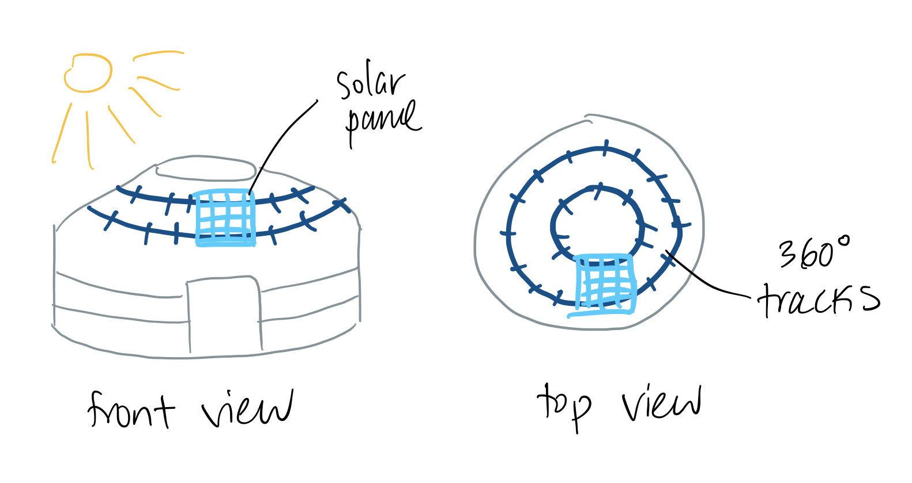

Ger-mounted Solar Tracker

Image Source: Shutterstock
My idea for final project is inspired by the 'National 100,000 Solar Ger Electrification Program' launched by the Mongolian goverment back in 2000. It provided solar panels to nomadic families without access to the electricity grid so that it could power simple electronics like a radio or a lightbulb. The power provided by a solar panel is highly dependent on the angle of the incident light. Maximum power is achieved when the plane of the solar panel and the direction of light is perpendicular. So, industrial solar farms, where they want to optimize for power, employ light-sensing 'trackers' that tilt the solar panel to track the sun as it moves across the sky.
Image Source: Solar Reviews
The image shown above shows two single-axis tracking mechanisms, one which rotates the panel on a horizontal axis and another which does the same on the vertical axis. These trackers are generally designed for solar panels installed on a flat plane. I would like to challenge myself for this class to fabricate a tracking mechanism designed for for the conic roof of a Mongolian ger.
The sketch above illustrates the circular tracks which wrap around the entire roof of the Mongolian ger. Some features that I would these trackers to have and will have to think about over the course of the semester will include:
- Solar panel actuator. What will be pushing the solar panel around its track. Would I connect a small, flat motor underneath the solar panel? Perhaps is there an electromagnetic solution that might be easier or more elegant?
- Light-tracker. How will I detect the position of the sun in the sky? How expensive, complex, and accurate would a photo-detecting device be? Alternatively, there are online applications which calculate the path of the sun through the sky given a GPS coordinate, so might I program the position of the sun instead of detecting it?
- Power lines. How will I design the PV out line for a moving solar panel so that electricity is still delivered to inside the home?